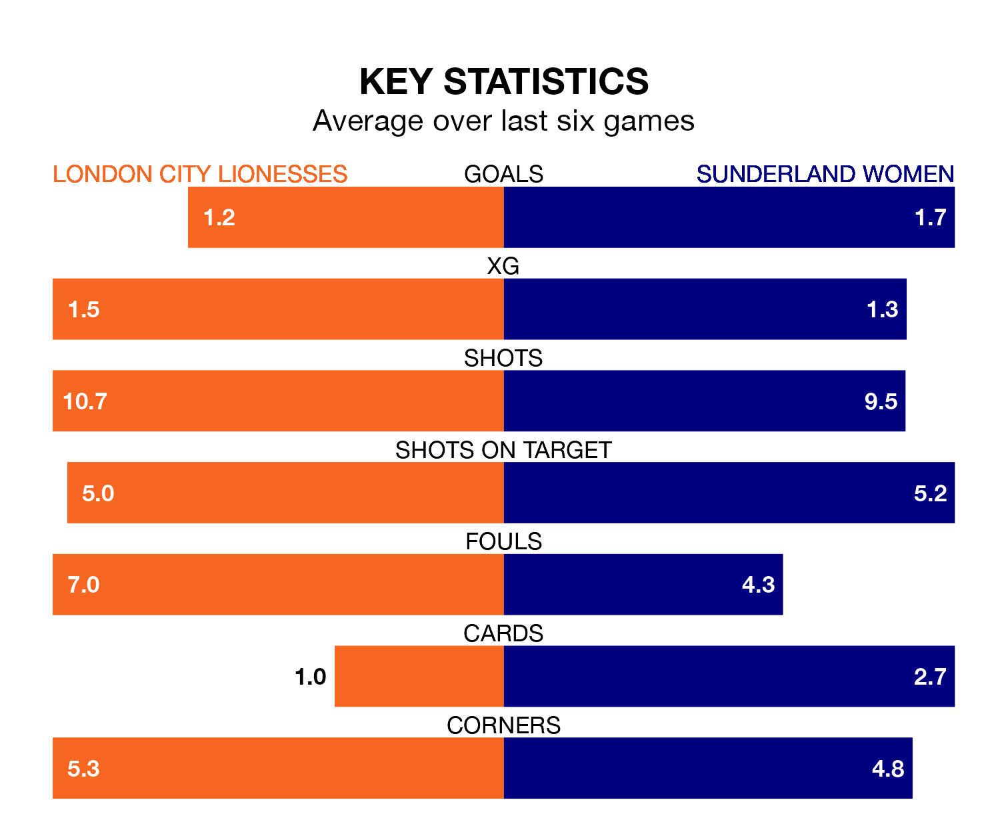

London City Lionesses host Sunderland Women in Sunday's early match at Princes Park looking to bounce back from defeat last time out in the FA Women's Championship.
The Lionesses, who sit 10th in the league after 17 games, fell to a 1-2 away defeat to Reading Women on March 3.
They face a Sunderland side who picked up a win in their last match, a 1-0 victory against Southampton Women, and who sit first in the table.
In Claudia Moan, Sunderland can rely on one of the league's safest pair of hands. She has kept eight clean sheets in her 17 appearances this season, and no 'keeper has prevented the opposition scoring more often in the FA Women's Championship.
In London City's net, Grace Moloney has three clean sheets in 15 games. She has conceded a goal every 61 minutes, more than twice as often as the 139 minutes between goals for Moan.
With 18 goals in 17 games so far this season, the Lionesses are scoring at below the league average rate with 1.1 goals per game. And they are conceding more than average, letting in 28 goals at a rate of 1.6 per game.
The away team, meanwhile, are average scorers, with 1.4 goals per game. They have conceded 0.8 goals per game.
The hosts are in disappointing form in the FA Women's Championship, with one win and two draws from their last six games.
With four wins and two losses over that period, Sunderland's form is much better – they have taken 12 points from 18, compared to London City's five.
In the last five years, London City and Sunderland have played each other on five occasions. London City won four of them and they drew once.
On average, the Lionesses scored 2.0 goals and Sunderland 0.4 in those matches.
Their last meeting was on August 27, when they played out a 0-0 draw.
Updated: 15:10 (UTC), 15/03/24